Conheça um pouco de MATO GROSSO e suas maravilhas turisticas
Cachoeiras, montanhas, rafting, escaladas, canoagem entre outras atividades.
O Mato Grosso é monumental e possui diversos destinos imperdíveis e pouco conhecidos dos brasileiros com muitas
cachoeiras e piscinas naturais, é o terceiro maior Estado brasileiro, ficando atrás dos Estados do Amazonas e Pará.
No Tratado de Tordesilhas, a área que depois se tornou a “Capitania de Mato Grosso” pertencia à Coroa espanhola e
só a partir de 1680 foi tomada pelos bandeirantes paulistas. O Pantanal, um de seus principais destinos, ocupa apenas
7% de seu território e era chamado pelos colonizadores europeus de “Mar dos Xaraés”, em referência às cheias do rio
Paraguai e aos índios xaraés. Além do Pantanal o estado é ocupado pelos biomas do Cerrado (39,6%) e pela floresta amazônica
(56,6%). Outro grande destino do estado é o Parque Nacional da Chapada dos Guimarães que provavelmente você já conhece ou
já ouviu falar. O que nós iremos reunir aqui, são os destinos imperdíveis e pouco conhecidos de Mato Grosso.
“Vila Bela foi a primeira capital de Mato Grosso e carrega uma grande carga de história em sua origem.
A cultura negra e a força dos quilombolas está presente naquele lugar, mas não é só isso. Vila Bela, às margens do Rio Guaporé,
e na fronteira com a Bolívia, fica a 80 Km da cidade de Pontes e Lacerda e possui uma bela serra onde se encontram várias cachoeiras.
A visita é interessante mas precisa ser guiada por um dos poucos guias locais. A estrutura para turismo ainda é precária, o que pode
tornar o passeio mais interessante para os aventureiros, que podem explorar caminhos quase intocados.
Para os casais a cachoeira dos namorados é um caminho maravilhoso. Mas para quem gosta de aventura o caminho da cachoeira do Jatobá
com 3h30 de caminhada e uma bela vista de mais de 200m de altura é algo inesquecível. Como é inesquecível poder banhar-se no belo
riacho que passa por cima da cachoeira.
Aripuanã está dentro da floresta Amazônica às margens do rio Aripuanã que possui 2 das mais
belas cachoeiras do país, as cachoeiras de Andorinhas e Dardanellos. A região também conta com trilhas e balneários
com piscinas naturais. A cidade que fica a 990 km de Cuiabá na década de 40 foi um dos pontos de desbravamento do Projeto Rondon.
Nova Xavantina e Barra do Garças possuem diversas atrações com muitas trilhas, cachoeiras e piscinas naturais,
além de serem base para quem quer se aventurar pela Serra do Roncador. As principais atrações são:
Rancho Ponte de Pedra
No rio Ponte de Pedra encontram-se várias quedas d’água de 1 a 2 metros de altura,
algumas formam belas piscinas de água verde esmeralda. O local possui área para banho e camping. O acesso é pela BR 158,
entrada à direita no km 155, sentido Barra do Garças. A visitação pode ser feita durante todo o ano e precisa ser autorizada
pelo proprietário, Marinho..
Cachoeira da Saudade
O local é mais conhecido como cachoeira da Ilha do Coco, possui três quedas d’água, totalizando
22 metros, com paredões de pedra ideais para a prática de rapel. Tem fácil acesso e possui área para camping. A cachoeira é
muito visitada durante o período da seca (maio a outubro), mas fica dentro de uma área particular e a entrada precisa ser
autorizada pelo proprietário..
Olho D’Água
Está localizado a cerca de cinco km do centro do setor Xavantina, no Sítio Morada Ecológica, é uma nascente de águas
límpidas que forma três fervedouros, de propriedade de Julio, só pode ser visitada mediante autorização. Estrada do bairro da Palha..
Cachoeiras do Bateia
O córrego Bateira fica em propriedade particular e está localizado a 60 km do centro de Barra do Garças.
São 17 quedas d’água e muitas piscinas naturais com águas transparentes e esverdeadas. .
Foram exatamente essas as palavras despejadas imediatamente da
minha boca, sem sequer pensar no que estava dizendo, quando me deparei com a Lagoa da Lua. Tive a sensação de que estava dentro de
um bote no meio do mar, e sem ser exagerada, o do Caribe.
Em um sábado, ás 5 da manhã, acordei, peguei minha mochila, algumas guloseimas e parti com mais 3 amigos, rumo à Primavera do Leste
– MT pela BR 251 e BR 070. Sim, sei que optei pelo caminho mais longo, porém a estrada é nova e sem transito pesado de caminhões.
Em Primavera do Leste, encontrei o pessoal do mergulho, Rogério e Weder. Rogério é instrutor de mergulho, e tem só no Mato Grosso,
16 anos de profissão. Tanto tempo assim e eu só fui descobrir essa maravilha pertinho de mim, agora. De Primavera até a Lagoa,
são mais 25 km, sendo que uns 8 desses é estrada de chão, em perfeitas condições.
Foto: Paulo Henrique Vacario / Instagram: @paulovacario
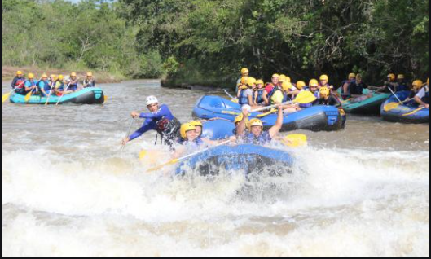
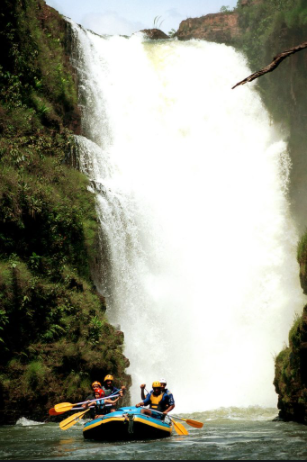
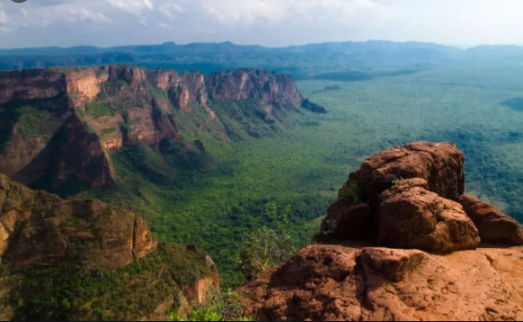
“Jaciara está localizada ao Sudeste de Cuiabá 142 Km
e possui infra-estrutura de serviços com pousadas, hotéis,
restaurantes, balneários, etc.
É uma região produtora de águas termais e minerais .Em Jaciara encontramos lugares de rara beleza, para serem apreciados e
fotografados: Rios, Cachoeiras, Águas Quentes, Sítios Arqueológicos, Piscinas Naturais, Parque Aquático, Rapel, Rafting e muito
mais atividades: Bóia-Cross, Canoagem, Canyoning, Motocross, Mountain Bike, Off-Road e Tirolesa.
O nome da cidade tem origem na lenda da Índia Jaciara, Senhora da Lua, no texto Vitória Régia, de Humberto Campos. A era
região habitada por diversas tribos e povos primitivos e está sob o místico paralelo 15º, que, segundo místicos, são regiões
onde as energias cósmicas positivas banham a todos com mais intensidade.
É atualmente conhecida por suas atividades de ecoturismo e aventura, sendo uma das referências em atividades de aventura em
Mato Grosso.
 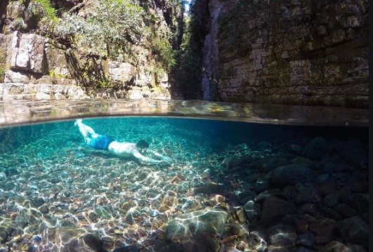
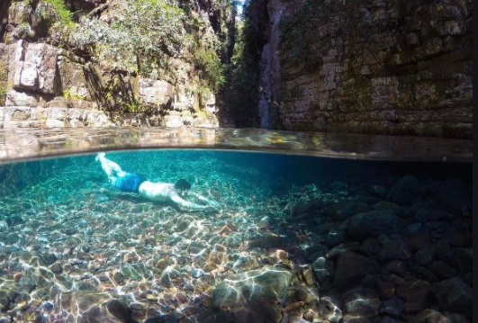
 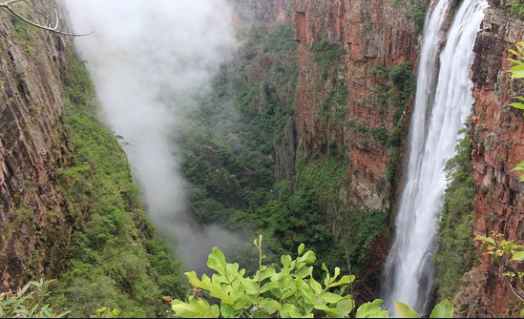
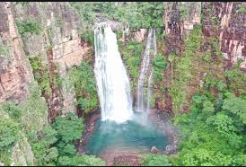
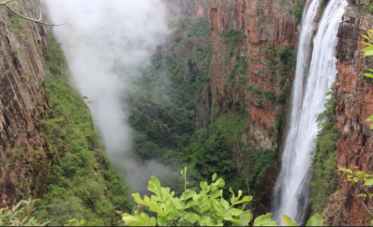
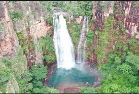
 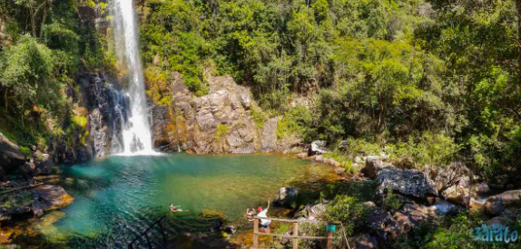
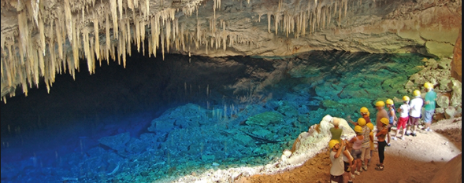
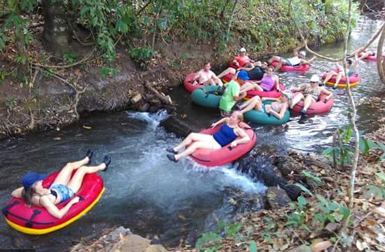
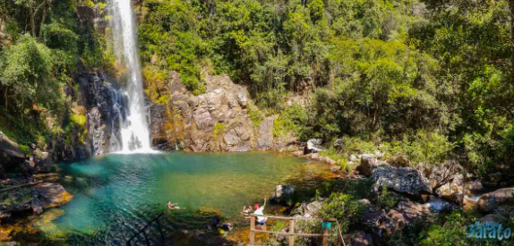
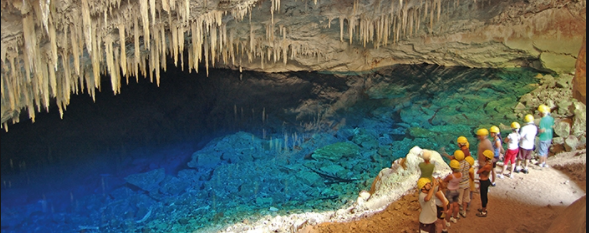
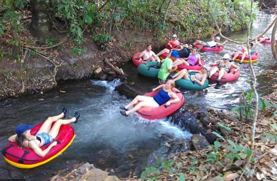